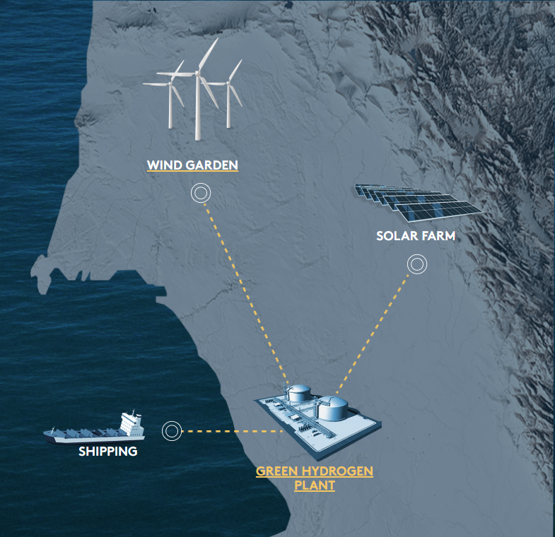

Green hydrogen · 2023 – present
NEOM Green Hydrogen Project
A first-of-its-kind plant powered entirely by about 4 GW of dedicated wind and solar, producing up to 1.2 million tonnes of green ammonia a year for export. I lead Employer quality across the hydrogen plant (GHE), the innovation centre (HIDC) and the power, wind and solar packages (PWE).
nghc.com →